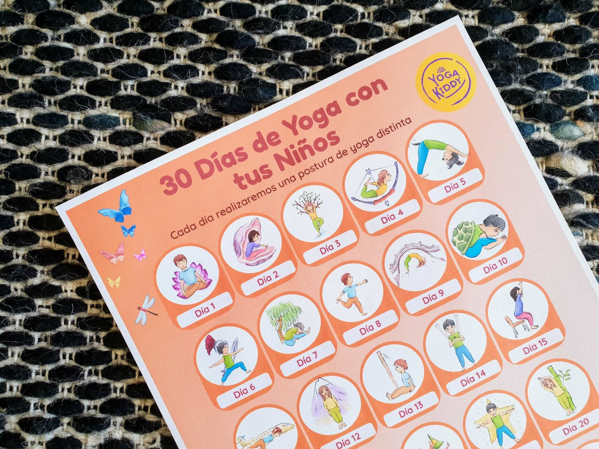

Cada día conocemos mucho más cuáles son los beneficios del yoga en nuestra vida. Pero también en la vida de nuestros niñas y niños.
Igual que en los adultos, el Yoga en los niños y niñas, trabaja en todos los aspectos del ser: Físico, Mental, Emocional y Social.
Algunos de esos beneficios son:
Beneficios Plano físico:
- Promueve hábitos respiratorios y posturales correctos.
- Desarrolla conciencia corporal.
- Incrementa flexibilidad, aumenta fuerza y desarrolla equilibrio corporal.
- Estimula la capacidad pulmonar, oxigenando la sangre, y por ende, el cerebro.
Beneficios a nivel mental, emocional y social:
- Mejora la capacidad de concentración y atención.
- Disminuye los niveles de estrés y ansiedad.
- Aumento del autoestima y seguridad.
- Enriquece capacidad de tolerancia a la frustración.
- Genera estados de calma y armonía.
- Mejora la relación con el entorno y sus pares.
- Fomenta la cooperación y el trabajo en equipo.
Beneficios pedagógicos:
- Favorece el aprendizaje por múltiples canales (visual, auditivo y kinestésico).
- Estimulación de funciones cognitivas que se encuentran a la base del aprendizaje (atención-concentración, percepción, memoria, lenguaje, pensamiento, psicomotricidad).
- Despierta la creatividad y el pensamiento mágico-divergente, preservando lo lúdico del desarrollo infantil.
Para comenzar a disfrutar de estos beneficios e introducir a nuestros niños y niñas en la práctica del yoga, aquí les compartimos un nuevo desafío para que podamos realizar con nuestros pequeños en casa: 30 días de yoga con tus niños!
El objetivo de esta actividad NO es ejecutar de manera correcta cada postura de yoga, sino simplemente introducir de manera lúdica a nuestros niños en esta hermosa filosofía de vida. Mediante la práctica espontánea!
Este calendario te presenta 30 distintas posturas de yoga (Asanas), con hermosas ilustraciones que tus niños ¡adorarán imitar!
No te preocupes por el significado de cada postura ni de cómo realizarlas paso a paso. Simplemente, observa cada día tu calendario junto a tu(s) peque(s), intenten imitar cada imagen y a disfrutar!
Esperando que esta actividad les regale hermosos momentos de yoga junto a sus niños, les abraza,
Carmen 🙏
</div>